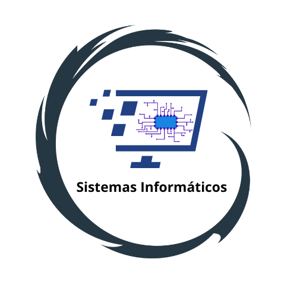

Bienvenidos a la sección de Carreras
Haz clic en una pestaña para ir directamente a la información de cada carrera.
una carrera de 3 años
Administración de Empresas
La Administración de Empresas es una disciplina que se encarga de organizar, dirigir y controlar los recursos humanos, financieros, materiales y tecnológicos de una organización para alcanzar sus objetivos y maximizar la eficiencia. A lo largo de esta carrera, los estudiantes desarrollarán habilidades de liderazgo, toma de decisiones, resolución de conflictos y planificación estratégica, preparándolos para desempeñarse en diversos sectores empresariales.
una carrera de 3 años
Contaduría General
La carrera de Contaduría General proporciona conocimientos sobre la contabilidad, las finanzas y la gestión de la información económica de una empresa. Los estudiantes aprenderán a analizar estados financieros, preparar reportes contables, realizar auditorías y aplicar normas fiscales. Es una carrera esencial para quienes desean gestionar la economía y las finanzas de las organizaciones, asegurando la transparencia y el cumplimiento de las regulaciones legales.
una carrera de 3 años
Comercio Internacional
El Comercio Internacional se enfoca en la negociación y gestión de transacciones comerciales entre países. Los estudiantes aprenderán sobre las leyes y regulaciones internacionales, estrategias de marketing global, logística, comercio exterior y finanzas internacionales. Esta carrera es ideal para aquellos interesados en la expansión de empresas a mercados internacionales, el análisis de mercados globales y la optimización de procesos de importación y exportación.
una carrera de 3 años
Enfermería
La carrera de Enfermería prepara a los estudiantes para brindar atención médica directa a los pacientes, especialmente en situaciones críticas. Los futuros enfermeros aprenderán a realizar procedimientos médicos básicos, administrar medicamentos, apoyar en la rehabilitación de pacientes y trabajar en equipo con otros profesionales de la salud. La ética profesional y el compromiso con el bienestar de los pacientes son aspectos fundamentales de esta carrera.
una carrera de 3 años
Mercadotecnia
La Mercadotecnia se centra en el estudio del comportamiento del consumidor, la creación de estrategias de promoción y publicidad, y la optimización de las ventas. Durante esta carrera, los estudiantes aprenderán cómo segmentar mercados, desarrollar campañas publicitarias, utilizar herramientas digitales para la promoción y realizar investigaciones de mercado. Es una excelente opción para quienes desean liderar proyectos de marketing en empresas de cualquier sector.
una carrera de 3 años
Secretariado Ejecutivo
El Secretariado Ejecutivo capacita a los estudiantes en la organización de actividades administrativas, la gestión de documentos y la comunicación empresarial. Los estudiantes aprenderán habilidades en redacción, manejo de herramientas ofimáticas, organización de agendas, atención al cliente y coordinación de eventos. Esta carrera es ideal para aquellos interesados en desempeñar roles clave dentro de una empresa, asegurando el buen funcionamiento de las operaciones diarias.

una carrera de 3 años
Sistemas Informáticos
La carrera de Sistemas Informáticos prepara a los estudiantes en el diseño, implementación y mantenimiento de sistemas de software y hardware. A lo largo de esta carrera, los estudiantes adquirirán habilidades en programación, redes, desarrollo web y gestión de bases de datos. Esta formación es ideal para aquellos que deseen convertirse en expertos en la gestión de infraestructuras tecnológicas y desarrollar soluciones informáticas para empresas y organizaciones.
una carrera de 3 años
Fisioterapia
La Fisioterapia se enfoca en la prevención y tratamiento de lesiones musculares y articulares, así como en la rehabilitación de pacientes con enfermedades crónicas o lesiones traumáticas. Los estudiantes aprenderán a aplicar técnicas de rehabilitación física, electroterapia, masajes terapéuticos y ejercicios. Esta carrera es ideal para quienes deseen trabajar en el área de la salud, ayudando a mejorar la calidad de vida de las personas a través de la recuperación funcional.